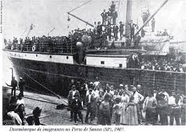

Final do século XIX - Início do século XX
Colonização por imigrantes poloneses, ucranianos, italianos e alemães. Agricultura de subsistência com cultivo de milho, feijão, trigo e batata.
Colonização por imigrantes poloneses, ucranianos, italianos e alemães. Agricultura de subsistência com cultivo de milho, feijão, trigo e batata.
Intensificação da produção agrícola com introdução de tecnologias e mecanização. A cultura do mate era significativa.
Modernização e diversificação da agropecuária com novas técnicas de cultivo e manejo sustentável. Consolidação da produção de grãos, especialmente soja e milho.
Produção diversificada incluindo fruticultura, horticultura e produção de leite. Crescimento do cooperativismo e práticas sustentáveis.